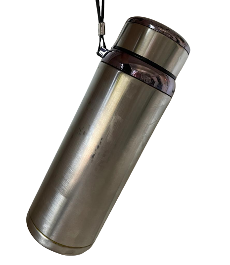
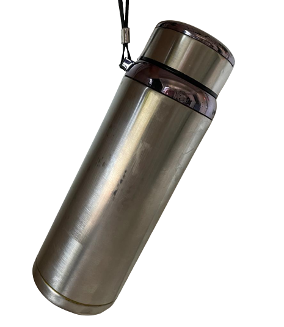
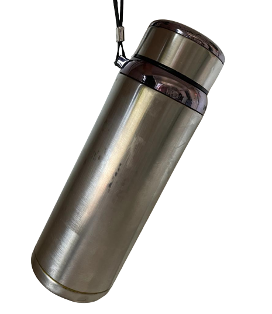

When : Always
Where : In the forrest: The Google maps link or the GPS coordinates 37°27'45.9"N 126°57'20.2"E
What to bring : Nothing really the hike takes maybe 20 min.
What to do : On top of the little mountain you have a nice view even tho its the smallest mountain around campus. And this mountain actually is not gwanaksan haha. Theore are multiple ways to get there, to be honest just trust your instincts. You can enter from the global dorms or the GSIS building. Just walk as high as you can untill you have reached the stones with the sign. When you have found the sign you have a goo view of the GSES building and around that stone the treassure is hidden. You can bring your lunch up there and enjoy it on the stones or on the little wooden thingy. Oh and of course the tressure is hidden there somewhere.

What next : After you have found the tressure you have sucesfully completed the treasure hunt - jeeeejj. What comes next. You can just take all the treasure from the bottle, and if you are cool you can even put your own stuff in there and put it back again, so that the next person who might finish the treasure hunt can find something again. I hope you had fun with it and you know the campus a little better now. I am very impressed that you actually solved all the riddles and completed the whole journy. You must be really cool hahah Have a good life!